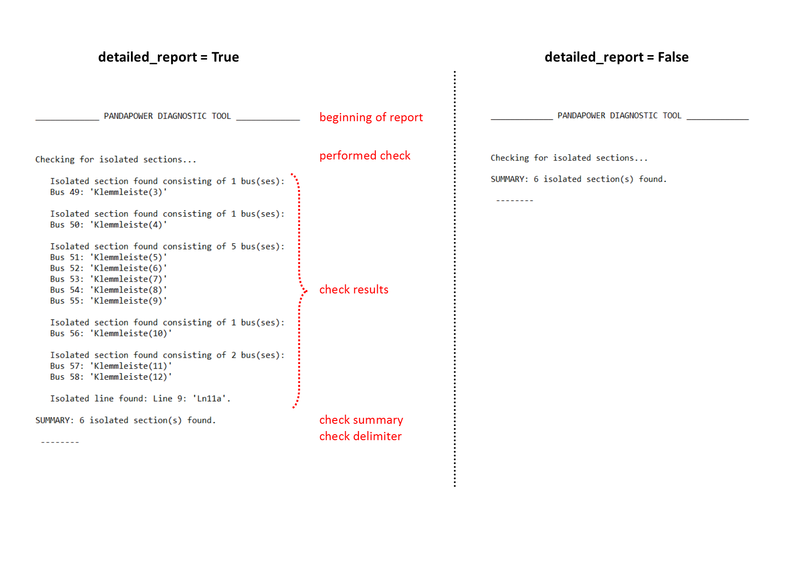
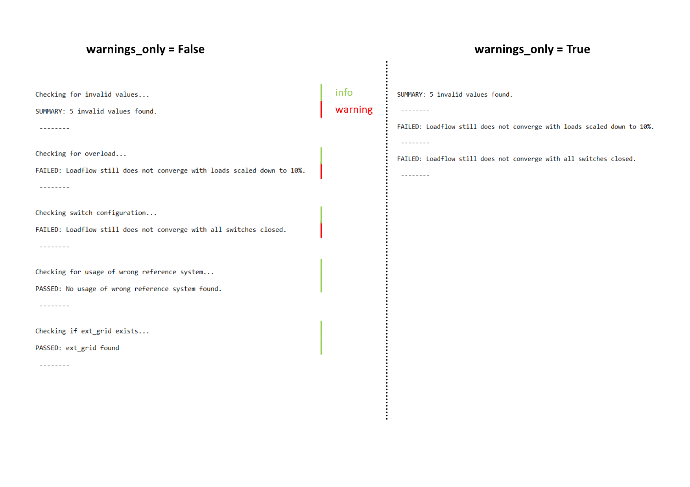

Diagnostic Function¶
A power flow calculation on a pandapower network can fail to converge for a vast variety of reasons, which often makes debugging difficult, annoying and time consuming. To help with that, the diagnostic function automatically checks pandapower networks for the most common issues leading to errors. It provides logging output and diagnoses with a controllable level of detail.
-
pandapower.diagnostic(net, report_style='detailed', warnings_only=False, return_result_dict=True, overload_scaling_factor=0.001, lines_min_length_km=0, lines_min_z_ohm=0, nom_voltage_tolerance=0.3)¶ Tool for diagnosis of pandapower networks. Identifies possible reasons for non converging loadflows.
- INPUT:
- net (PandapowerNet) : pandapower network
- OPTIONAL:
- report_style (string, ‘detailed’) : style of the report, that gets ouput in the console
‘detailled’: full report with high level of additional descriptions
‘compact’ : more compact report, containing essential information only
‘None’ : no report
- warnings_only (boolean, False): Filters logging output for warnings
True: logging output for errors only
False: logging output for all checks, regardless if errors were found or not
- return_result_dict (boolean, True): returns a dictionary containing all check results
True: returns dict with all check results
False: no result dict
- overload_scaling_factor (float, 0.001): downscaling factor for loads and generation for overload check
- lines_min_length_km (float, 0): minimum length_km allowed for lines
- lines_min_z_ohm (float, 0): minimum z_ohm allowed for lines
- nom_voltage_tolerance (float, 0.3): highest allowed relative deviation between nominal voltages and bus voltages
- RETURN:
- diag_results (dict): dict that contains the indeces of all elements where errors were found
Format: {‘check_name’: check_results}
EXAMPLE:
misc.diagnostic(net, report_style='compact', warnings_only=True)
Usage ist very simple: Just call the function and pass the net you want to diagnose as an argument. Optionally you can specify if you want detailed logging output or summaries only and if the diagnostic should log all checks performed vs. errors only.
Check functions¶
The diagnostic function includes the following checks:
- invalid values (e.g. negative element indeces)
- check, if at least one external grid exists
- check, if there are busses with more than one gen and/or ext_grid
- overload: tries to run a loadflow calculation with loads scaled down to 10%
- switch_configuration: tries to run a loadflow calculation with all switches closed
- inconsistent voltages: checks, if there are lines or switches that connect different voltage levels
- lines with impedance zero
- closed switches between in_service and out_of_service busses
- components whose nominal voltages differ from the nominal voltages of the busses they’re connected to
- elements, that are disconnected from the network
- usage of wrong reference system for power values of loads and gens
Logging output
Here are a few examples of what logging output looks like:
detailed_report = True/False
Both reports show the same result, but on the left hand picture with detailed information, on the right hand picture summary only.
{kind=link}
warnings_only = True/False
{kind=link}
Result dict
Aditionally all check results are returned in a dict to allow simple access to the indeces of all element where errors were found.